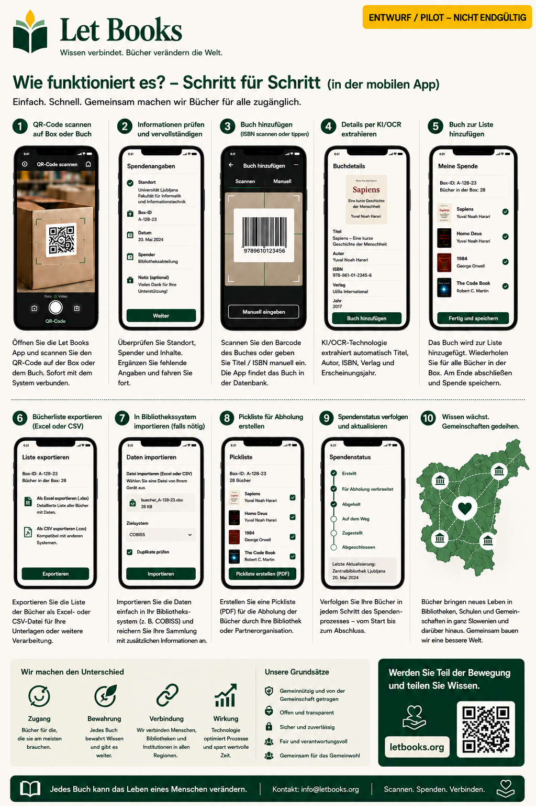

Texte und Arbeitsabläufe auf dieser Seite beschreiben die Projektrichtung und nicht eine fertige Produktivumsetzung.
Leitfaden für Einzelpersonen
Erfassen Sie die erste Box, ohne daraus ein Großprojekt zu machen.
Diese Seite richtet sich an private Spender, Familien, Freiwillige und kleine Organisationen, die ernsthafte Bücher bewahren und später leichter anbieten und wiederfinden möchten.

Wann dieser Leitfaden für Sie passt
- Sie haben Bücher zu Hause, im Lager oder im Büro.
- Sie möchten wissen, was in jeder Box ist, bevor Sie etwas anbieten.
- Sie brauchen einen mobilen Ablauf mit wenig Tipparbeit.
- Später möchten Sie vielleicht an eine oder mehrere Bibliotheken spenden.
Wie Erfolg aussieht
- Sie scannen eine Box und sehen ihren Inhalt.
- Sie fügen in Sekunden ein neues Buch hinzu.
- Sie exportieren eine saubere Liste zur Prüfung.
- Sie finden angeforderte Exemplare wieder, wenn die Abholung ansteht.
Schneller Arbeitsablauf
Der erste Durchlauf muss für echte Regale und echte Boxen schnell genug sein.
QR-Boxen scannen
Öffnen Sie vor der Erfassung den richtigen Standortkontext.
Cover fotografieren
Das Cover bleibt die wichtigste visuelle Orientierung für die Übersicht.
ISBN scannen oder eingeben
Wenn sichtbar, nutzen Sie es. Wenn nicht, erst speichern und später anreichern.
Speichern und weiter
Die Schnellerfassung darf vor dem nächsten Buch keine vollständige Bibliografie verlangen.
Für die Prüfung exportieren
Bereiten Sie eine Serie für Bibliothek oder Partner vor.
Abholliste erstellen
Angeforderte Bücher werden nach Raum, Regal und Box gruppiert.
Was am wichtigsten zu erfassen ist
Titel, Autor, sichtbares Jahr, Zustand des Exemplars und der genaue Standort. Diese Daten machen eine Spende später umsetzbar.
KI als Helfer, nicht als Autorität
Wenn OCR oder Metadatenvorschläge später aktiviert werden, behandeln Sie sie als Vorschläge, die menschliche Prüfung brauchen.
Beispiel: Eine Familie erbt die technische Bibliothek eines Professors, markiert die Boxen, fotografiert die Cover, exportiert eine Serie zur Prüfung und findet später genau die Exemplare wieder, die die Bibliothek anfordert.